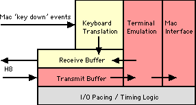

On this page
• overview
• keyboard mapping
• graphic characters
• character pacing
• output processing
• cursor display
Related links
H-19 Terminal
This page describes the emulator's implementation of the H-19 terminal.
A complete emulation of the H-19 was not completed; the device has a number of capabilities, such as the ability to interpret a set of ANSI escape sequences, that were not implemented. Refer to limitations for a complete list.
H-19 Overview
The H-19 Emulator supports the following capabilities.
Power-on configuration
- underscore cursor;
- discard at end of line (no wrap from column 80);
- no auto-CR or auto-LF;
- Heath-mode escape sequences (ANSI will not be supported at all);
- keypad normal and unshifted.
All but Heath-mode escape sequences can be overridden by escape sequences after the emulator is started.
Tabs will be fixed at columns 9, 17, 25, 33, 41, 49, 57, 65, 73, 74, 75, 76, 77, 78, 79 and 80. A tab from column 80 will not move the cursor.
Block Diagram
Note: The words "transmit" and "receive" are used from the viewpoint of the H8, not the H-19.
In order to support "scroll mode," characters are received into a buffer. The H-19 issues Xoff when the buffer is 80% full and Xon when the buffer is 25% full.
Mac keystrokes are translated and passed into a pacing buffer so that multiple-character sequences don't overrun the serial port (remember, we don't have an actual, slow serial line to slow things naturally). Incoming characters are paced at a rate of 200 cps.
The emulator can put characters into the receiver buffer in two cases:
It needs to issue Xon or Xoff.
A "transmit page" or "transmit 25th line" operation is executed. These operations can result in a burst of input that greatly exceeds the screen size.
As of release 5.3.2, you can paste text from the clipboard into the H-19 window. This text is sent to the H8 as if it were typed at the keyboard. The paste buffer is not passed through the receiver buffer; rather, the emulator bypasses the receiver buffer when pasting text. Pasted text and text coming from the keyboard or H-19 buffer will not intermingle.
The H-19 terminal window has a "spring open" feature. If the terminal window has not been displayed since the emulator was started, the first printable character output will cause the window to open in front of the PAM/8 GUI. This allows the user to key the boot address and press "go" and be able to use the H-19 immediately without fooling around with emulator menus.
When booting an HDOS 1.6 disk or a newly-sysgened HDOS 2.0 disk, HDOS will sound PAM/8's alarm and display "SPACE" in the front-panel LEDs to prompt the user to press the space key so HDOS can determine the terminal baud rate. In this instance, the user will have to manually display the terminal window before pressing space.
Keyboard Mapping
Keyboard Processing Overview
The Macintosh key-down event record contains both an ASCII character code and a virtual key code. While several keys on the keyboard may produce the same ASCII character — there are two "=" keys, for example — there is a one-to-one mapping between physical keys and virtual key codes that is consistent across all Macintosh keyboard layouts.
It's most convenient to use the virtual key code to identify keys to be mapped to H-19 emulation functions. In the documentation that follows, "virtual key code" refers to the unique key identifier and "ASCII character code" refers to the normal ASCII value of the keystroke.
The main body of the Macintosh keyboard has virtual key codes less than 0x41. All other key codes are equal to or greater than 0x41. This is actually a quite convenient bit of luck, in that it improves keyboard translation performance on the touch-typing keys. In pseudo-code, keyboard translation proceeds as follows:
if (virtual key code is less than 0x41)
if (the option key is down)
translate key code against main keyboard function key table
(option-1 = F1, etc.)
if ( no hit in table )
if ( virtual key code = scroll key or break key )
handle these keys locally
else
send the ASCII character code to the H8 serial port
else // virtual key code must be >= 0x41
if ( virtual key code = the clear key )
handle clear locally
else if ( virtual key code = top row F9 )
handle scroll locally
else if (virtual key code = top row F12)
handle break locally
else
if ((shift_mode xor shift_key) == '1')
translate key code against the shifted keypad table
(cursor keys, insert/delete char, etc.)
if (no hit in table)
if (virtual key code = IC key)
if ( we are in insert-character mode )
send exit-insert-character-mode sequence
else send enter-insert-character-mode sequence
else if (alternate keypad mode set)
translate key code against the alternate keypad table
else
translate key code against the normal keypad table
end
The search tables have the following format:
typedef struct {
unsigned char vkc; // virtual key code
char *str; // output string
} keyXlateTab, *keyXlateTabPtr;
Each table is sorted in virtual key code order. The last vkc in the table is 0xff. If there is no match in the table, and with the exception of the keys handled separately as noted in the pseudo code above, the keystroke will be ignored.
Keyboard Translation
The "keyboard translation" function (ref. h-19 overview) will perform the following mappings:
H-19 Key |
Mac Key |
Virtual Key Code |
Output Sequence |
|---|---|---|---|
F1 |
F1 |
0x7a |
esc S |
F2 |
F2 |
0x78 |
esc T |
F3 |
F3 |
0x63 |
esc U |
F4 |
F4 |
0x76 |
esc V |
F5 |
F5 |
0x60 |
esc W |
Erase |
Replaced with the keypad Clear key. See "Other Mac Key Mappings" table below. |
||
Blue |
F6 |
0x61 |
esc P |
Red |
F7 |
0x62 |
esc Q |
Gray |
F8 |
0x64 |
esc R |
Scroll |
F9 |
0x65 |
(1) |
Break |
F12 |
0x6f |
(2) |
|
|
|
|
F1 |
option-1 |
0x12 (w/ option) |
esc S |
F2 |
option-2 |
0x13 (w/ option) |
esc T |
F3 |
option-3 |
0x14 (w/ option) |
esc U |
F4 |
option-4 |
0x15 (w/ option) |
esc V |
F5 |
option-5 |
0x17 (w/ option) |
esc W |
Erase |
Replaced with the keypad Clear key. See "Other Mac Key Mappings" table below. |
||
Blue |
option-6 |
0x16 (w/ option) |
esc P |
Red |
option-7 |
0x1a (w/ option) |
esc Q |
Gray |
option-8 |
0x1c (w/ option) |
esc R |
Scroll |
option-9 |
0x19 (w/ option) |
(1) |
Break |
option-= |
0x18 (w/ option) |
(2) |
Notes:
The scroll key is a local function. When in scroll mode, pressing scroll will cause the next line of output to be displayed, and shift-scroll will cause the next page of output to be displayed. Scroll simply controls how many lines are pulled from the output buffer.
The break key will cause the Break and Framing Error bits to be set in port 350q's status register.
H-19 Key |
Mac Key |
Virtual Key Code |
Output Sequence |
|---|---|---|---|
0 |
0 |
0x52 |
0 |
1 |
1 |
0x53 |
1 |
2 |
2 |
0x54 |
2 |
3 |
3 |
0x55 |
3 |
4 |
4 |
0x56 |
4 |
5 |
5 |
0x57 |
5 |
6 |
6 |
0x58 |
6 |
7 |
7 |
0x59 |
7 |
8 |
8 |
0x5b |
8 |
9 |
9 |
0x5c |
9 |
. |
. |
0x41 |
. |
Enter |
Enter |
0x4c |
015 |
H-19 Key |
Mac Key |
Virtual |
Output |
Function |
|---|---|---|---|---|
0 |
0 |
0x52 |
0 |
|
1 |
1 |
0x53 |
esc L |
insert line |
2 |
2 |
0x54 |
esc B |
down |
3 |
3 |
0x55 |
esc M |
delete line |
4 |
4 |
0x56 |
esc D |
left |
5 |
5 |
0x57 |
esc H |
home |
6 |
6 |
0x58 |
esc C |
right |
7 |
7 |
0x59 |
esc @/esc O |
enter/exit |
8 |
8 |
0x5b |
esc A |
up |
9 |
9 |
0x5c |
esc N |
delete char |
. |
. |
0x41 |
. |
|
Enter |
Enter |
0x4c |
015 |
return |
H-19 Key |
Mac Key |
Virtual Key Code |
Output Sequence |
|---|---|---|---|
0 |
0 |
0x52 |
esc ? p |
1 |
1 |
0x53 |
esc ? q |
2 |
2 |
0x54 |
esc ? r |
3 |
3 |
0x55 |
esc ? s |
4 |
4 |
0x56 |
esc ? t |
5 |
5 |
0x57 |
esc ? u |
6 |
6 |
0x58 |
esc ? v |
7 |
7 |
0x59 |
esc ? w |
8 |
8 |
0x5b |
esc ? x |
9 |
9 |
0x5c |
esc ? y |
. |
. |
0x41 |
esc ? n |
Enter |
Enter |
0x4c |
esc ? M |
We have a number of additional keys available on the Mac extended keyboard that we might as well take advantage of. These keys will be supported as follows:
Mac Key |
Virtual |
Normal |
Alternate Keypad |
|---|---|---|---|
cursor up |
0x7e |
esc A |
esc ? x |
cursor left |
0x7b |
esc D |
esc ? t |
cursor right |
0x7c |
esc C |
esc ? v |
cursor down |
0x7d |
esc B |
esc ? r |
home |
0x73 |
esc H |
esc ? u |
end |
0x77 |
(key suppressed) |
n/a |
page up |
0x74 |
(key suppressed) |
n/a |
page down |
0x79 |
(same as |
n/a |
del |
0x75 |
esc N |
esc ? y |
clear |
0x47 |
esc J |
n/a |
shift-clear |
0x47 |
esc E |
n/a |
keypad = |
0x51 |
= |
n/a |
keypad / |
0x4b |
/ |
n/a |
keypad * |
0x43 |
* |
n/a |
keypad - |
0x4e |
- |
n/a |
keypad + |
0x45 |
+ |
n/a |
Finally, there are eight command keys with local functionality. Note that the command key is held down to activate each key.
Mac Key |
Virtual |
Emulator Function |
|---|---|---|
command-clear |
0x47 |
Clears the H-19 screen without transmitting anything to the H8. |
command-F9 (scroll) |
0x19 |
Toggles hold mode on/off locally, without transmitting anything to the H8. |
command-home |
0x73 |
Scrolls to the top of the 500-line scroll-back buffer. |
command-end |
0x77 |
Scrolls to the bottom of the 500-line scroll-back buffer. |
command-page up |
0x74 |
Scrolls up one page (23 lines) in the scroll-back buffer. |
command-page down |
0x79 |
Scrolls down one page (23 lines) in the scroll-back buffer. |
command-up arrow |
0x7e |
Scrolls up one line in the scroll-back buffer. |
command-down arrow |
0x7d |
Scrolls down one line in the scroll-back buffer. |
The scroll command keys effectively duplicate the functionality of the H-19 window scroll bar.
H-19 Graphics Character Generation
The emulator uses a modified a copy of the Monaco 10-point font which contains the H-19 graphic characters. The font is named "Heath 10."
The graphic characters replace the special characters at ASCII offset 336Q through 376Q in the font set ("Q" indicates octal notation). To display a graphics character, add 200Q to the corresponding ASCII character. Example: The first graphics character is the raised dot, corresponding with the ^ character, which is ASCII 136Q. 136Q + 200Q = 336Q or 222D, which is where the raised dot is in the font.
Here is the full set of graphics characters along with the octal and graphic representation of the corresponding normal character.

Character Pacing
As noted in H-19 Overview, all characters to be sent to the H8 are placed into a receive buffer. H8 input must be paced so that we don't exceed around 500 characters per second.
The mechanism used is the 1ms emulation clock tick. On every other tick, we check to see whether there's a character in the buffer. If so, that character is placed on the UART via a call to ioPutSerialData.
For any given keystroke, there is a delay of up to 2ms before it appears on the UART. At present, there's a delay of up to 25ms before we get that keystroke from the Mac Event Manager, and this extra delay isn't noticeable.
(The original plan had been to input at a rate of around 1,000 cps. In testing this proved to be too fast for the emulated H8, which lost the occasional leading ESC character in a function key sequence. Slowing the rate to 500 cps has proven to be 100% reliable.)
Starting with release 4.1, outbound characters are paced so that output does not exceed 2,000 characters per second. Again, this is done using the 1ms emulation clock tick. On each tick, a 2-character output quota is refreshed. h19Status (ref. I/O Package) will return transmitterEmpty status only if this count is non-zero.
Output Character Processing
Note — Output, in this case, refers to characters sent by the H8 to the H-19 terminal.
Logic
H-19 terminal output processing is table driven, using a series of tables that taken together denote the state of the output data stream. Each time a character is output, the current table is searched and the appropriate action taken.
The tables are defined as follows:
typedef struct {
unsigned char outputChar; // output by the H8
int nextTableNdx; // next table ndx
void (*procRoutine) (void); // processing routine
} outXlateTab, *outXlateTabPtr;
outXlateTabPtr nextTable[] = { outNormal, outEsc, ... };
If the processing routine is nil, none will execute. But the table address will change to the next table. The last entry, outputChar = 0xff, will match any character output.
Let's process one easy example. The initial state has the current table set to the default table.
A character (ESC) is output. We search the current table and find the character. Processing routine is nil so nothing is done. The current table pointer is changed (outEsc).
A character (Y) is output. We search the current table and find the character. Processing routine is nil so nothing is done. The current table pointer is changed (outRow).
A character (row) is output. We search the current table and find the final, default entry. Processing routine saves the row number. The current table pointer is changed (outCol).
A character (col) is output. We search the current table and find the final, default entry. Processing routine saves the column number, and moves the cursor to the correct coordinates. The current table pointer is changed (outNormal).
A character (A) is output. We search the current table and find the final, default entry. Processing routine updates the screen and moves the cursor to the right. The current table pointer is changed (outNormal).
The cascading order of tables effectively parses the output and sees that the correct function is performed for each character or escape sequence.
Output Escape Sequences
The characters following "esc" in the following tables are case sensitive. Esc is, of course, 033q (27d).
Escape Sequence |
Mnemonic |
Definition |
|---|---|---|
esc H |
HCUH |
cursor home |
esc C |
HCUF |
cursor forward |
esc D |
HCUB |
cursor backward |
esc B |
HCUD |
cursor down |
esc A |
HCUU |
cursor up |
esc I |
HRI |
reverse index |
esc n |
HCPR |
cursor position report |
esc j |
HSCP |
save cursor position |
esc k |
HRCP |
set cursor to previously saved position |
esc Y r c |
HDCA |
direct cursor addressing |
Additional information:
- cursor motion
-
None of the cursor movement functions in this table will cause the screen to scroll or move the cursor past the margins of the screen. For example, HCUU on line 1 will leave the cursor on line 1.
HCUU and HCUD do nothing when the cursor is on line 25.
- HCPR
-
The response to Cursor Position Report is the sequence "esc Y r+31, c+31" where 'r' and 'c' are the current cursor row and column.
- HRI
-
Reverse Index is Line Feed in reverse. HRI will move the cursor up one row. When issued with the cursor on line 1, the screen is scrolled down one line and a new blank line is opened on line 1.
(Note: The character following esc is an upper-case I ("eye")).
- HDCA
-
Position the cursor to a specific row and column. The cursor is positioned to row 'r'-31 and column 'c'-31. If the resulting row is invalid, the cursor stays on its current row. If the resulting column is invalid, the cursor moves to column 80.
Direct Cursor Addressing is the only way to move the cursor to line 25. Line 25 must be enabled before moving the cursor there. Otherwise, it's considered to be invalid and the cursor will stay in its current row.
Escape Sequence |
Mnemonic |
Definition |
|---|---|---|
esc E |
HCD |
clear display (shift erase key) |
esc b |
HBD |
erase beginning of display |
esc J |
HEOP |
erase to end of page (erase key) |
esc l |
HEL |
erase entire line |
esc o |
HEBL |
erase beginning of line |
esc K |
HEOL |
erase to end of line |
esc L |
HIL |
insert line |
esc M |
HDL |
delete line |
esc N |
HDCH |
delete character |
esc @ |
HEIM |
enter insert character mode |
esc O |
HERM |
exit insert character mode |
Additional information:
- HIL
-
After an insert line, the cursor is left in column 1 of the inserted line.
- HDL
-
After a delete line, the cursor is left in column 1 of the line following the deleted line. A new blank line is inserted on line 24.
- HEL
-
The character following the esc is a lower case L.
Escape Sequence |
Mnemonic |
Definition |
|---|---|---|
esc z |
HRAM |
reset to power up configuration |
esc x [n] |
HSM |
set (enable) operating mode |
esc y [n] |
HRM |
reset (disable) operating mode |
The following Configuration Modes replace the [n] in the HSM and HRM sequences above.
Configuration Mode |
Definition |
|---|---|
1 |
enable/disable line 25 |
3 |
enable/disable hold screen mode |
4 |
enable/disable block cursor |
5 |
enable/disable cursor off |
6 |
enable/disable shifted keypad |
7 |
enable/disable alternate keypad mode |
8 |
enable/disable auto line feed on receipt of CR |
9 |
enable/disable auto CR on receipt of line feed |
Additional information:
- unsupported Heath functions
-
A real H-19 will also support:
- modify baud rate (esc r [b])
- disable/enable key click (esc x 2 & esc y 2)
- enter ANSI mode (esc <)
These are not supported by this emulator. You can send the sequences to the terminal and they will be "eaten" but not processed.
- enable/disable cursor
-
Please notice the odd case, here: You are enabling the cursor to be off, and disabling that condition to turn the cursor on.
Escape Sequence |
Mnemonic |
Definition |
|---|---|---|
esc [ |
HEHS |
enter hold screen mode |
esc \ |
HXHS |
exit hold screen mode |
esc p |
HERV |
enter reverse video mode |
esc q |
HXRV |
exit reverse video mode |
esc F |
HEGM |
enter graphics mode |
esc G |
HXGM |
exit graphics mode |
esc t |
HEKS |
enter keypad shifted mode |
esc u |
HXKS |
exit keypad shifted mode |
esc = |
HAKM |
enter alternate keypad mode |
esc > |
HXAM |
exit alternate keypad mode |
Additional information:
- hold screen mode
-
You can toggle hold screen mode locally by typing command-Scroll (that's command F9 or command-option-9). This local toggle does not transmit escape sequences to the H-19.
- alternate keypad
-
The keypad in alternate mode replaces the normal mode; it is not possible to get the digits 1-9 from the keypad until you exit alternate keypad mode.
The shifted-mode sequences are not affected by alternate keypad mode.
- shifted keypad
-
Shifted keypad mode reverses the shift mode of the keypad. For example: when in keypad shifted mode pressing '1' will send the Insert Line sequence, while pressing shift-1 will send either '1' or esc ? q, depending on the alternate keypad mode setting.
Escape Sequence |
Mnemonic |
Definition |
|---|---|---|
esc v |
HEWA |
wrap around at end of line |
esc w |
HXWA |
discard at end of line |
esc Z |
HID |
identify as VT52 (send esc K) |
esc ] |
HX25 |
transmit 25th line |
esc # |
HXMP |
transmit page |
cr |
|
carriage return |
lf |
|
line feed |
bel |
|
bell |
tab |
|
horizontal tab |
bs |
|
backspace |
Additional information:
- unsupported Heath functions
-
A real H-19 will also support enable/disable keyboard (esc { and esc }). These are ignored in this emulator.
- HID
-
Sending HID simply causes the emulator to return esc K. Pointless? Sure. But there it is.
- HX25 and HXMP
-
These sequences will cause line 25 or lines 1-24 to be transmitted to the H8. Transmission proceeds as follows:
- each character is sent in turn starting at line 1 column 1 and proceeding across then down the screen;
- when transmitting the main screen, the cursor wraps from column 80 to column 1 of the next line but with no carriage return or line feed between lines;
- the appropriate escape sequences are sent to enter and exit reverse video and graphics modes, depending on the characters encountered on the screen — effectively, what you get back is what you sent in the first place;
- when the transmission is complete, a single carriage return is sent and the H-19 bell rings.
Due to the enter/exit reverse video and graphics sequences, the amount of data returned can be significantly more than the 80 or 1,920 characters on lines 25 and the main screen body, respectively. For example, if the last two characters on the screen are a normal character followed by a reverse-video graphics character, the last character of the screen will actually cause nine characters to be transmitted: enter reverse video, enter graphics, the character, exit reverse video, and exit graphics.
If there is a long string of text in a particular mode, the mode is changed only at the beginning and end of the string.
If line 25 is not enabled, HX25 will return only a carriage return.
- horizontal tab
-
Tab will cause the cursor to move to the next tab stop. The tab stops are fixed at columns 8, 16, 24 , 32, 40, 48, 56, 64, 72, 73, 74, 75, 76, 77, 78, 79 and 80. A tab in column 80 will not move the cursor.
Tab moves the cursor over the characters on the screen. Blanks are neither inserted nor written over the characters on the screen.
Cursor Display
H-19 emulation spends an extraordinary amount of time drawing and undrawing the cursor. This was mitigated to a degree by batching character output; the cursor is removed and drawn for each small batch of characters instead of for each character output. But when there's a long, fast burst of output, all that cursor drawing is just unnecessary overhead.
QuickDraw is blazing fast, but overhead is overhead.
This overhead was removed by delaying the drawing of the cursor on the screen. The amount of delay could have been anything, really, but testing showed that at 25ms a human operator can actually see the delay. I settled on 10ms because cursor motion is uniform and smooth when typing or moving the cursor by hand, and yet it's long enough to ride over small gaps in a burst of output.
Cursor display is now done in the 1ms clock tick processing routine, and is controlled by three variables:
int h19CursorDisplayed; // cursor has been drawn int h19CursorDesired; // cursor should be drawn int h19CursorTimer; // 10ms delay timer
H-19 processing routines call insertCursor and removeCursor to put the cursor on the screen and take it off, respectively.
- insertCursor
Instead of drawing the cursor, insertCursor sets h19CursorDesired to '1' and sets h19CursorTimer to 10. Unless removeCursor is called during that 10ms delay period, the cursor should appear on screen in 9-10ms.
- removeCursor
If h19CursorDisplayed = 1, the cursor is removed from the screen and h19CursorDisplayed is set to 0. In either case, h19CursorDesired is set to zero.
- h19Clock
If h19CursorDesired is set, h19Clock counts down the clock and calls drawCursor when the timer hits zero. (This among other functions.)
- drawCursor
drawCursor draws the actual cursor on screen, clears h19CursorDesired, and sets h19CursorDisplayed.
Note — Regardless, the cursor is never displayed on screen if the cursor has been disabled (h19ModeCursor = 0) by an output escape sequence.
The cursor itself defaults to an underline, and can be configured as a block. The underline cursor is a black line drawn using modeXor so that it is visible in both reverse and normal video. The cursor is erased by simply redrawing the cursor.
The block cursor is drawn using the PaintRect function, with a drawing mode of patXor. As such, it shows on a normal screen as a black box with a reverse-video character inside, and is reversed on a reverse-video character. When the cursor is idle, it blinks at a rate of: on for one second, off for one-half second. The blink is accomplished simply by calling removeCursor and insertCursor.